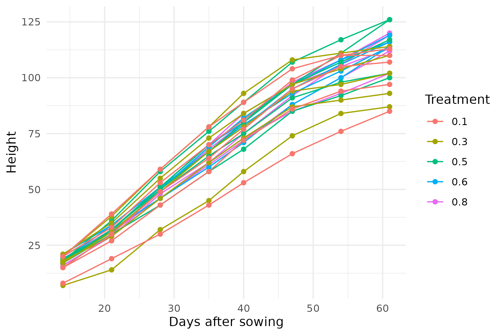
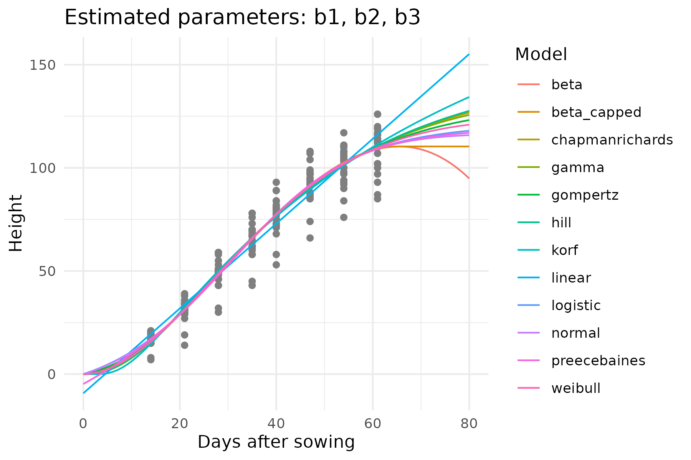
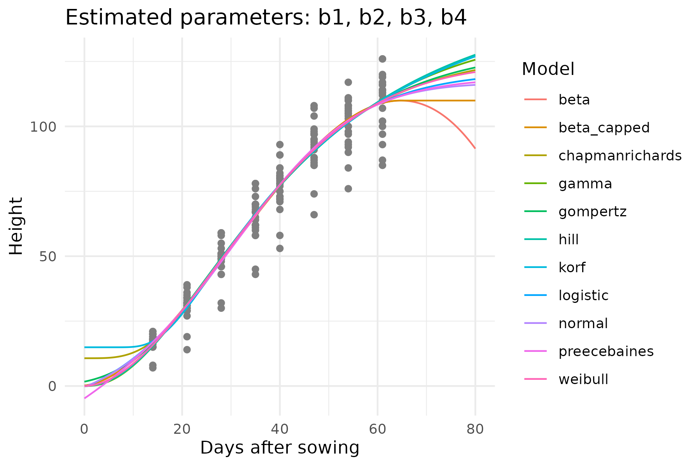
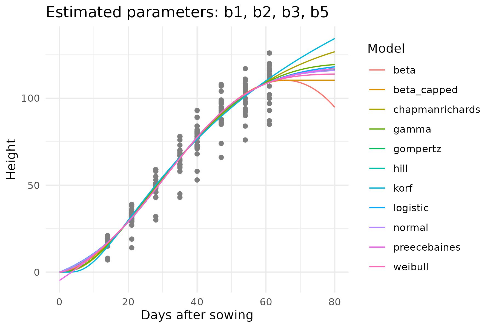
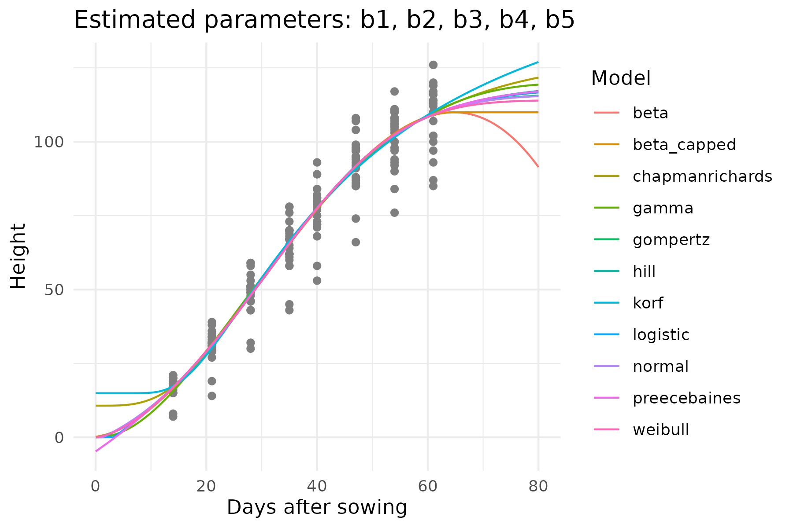
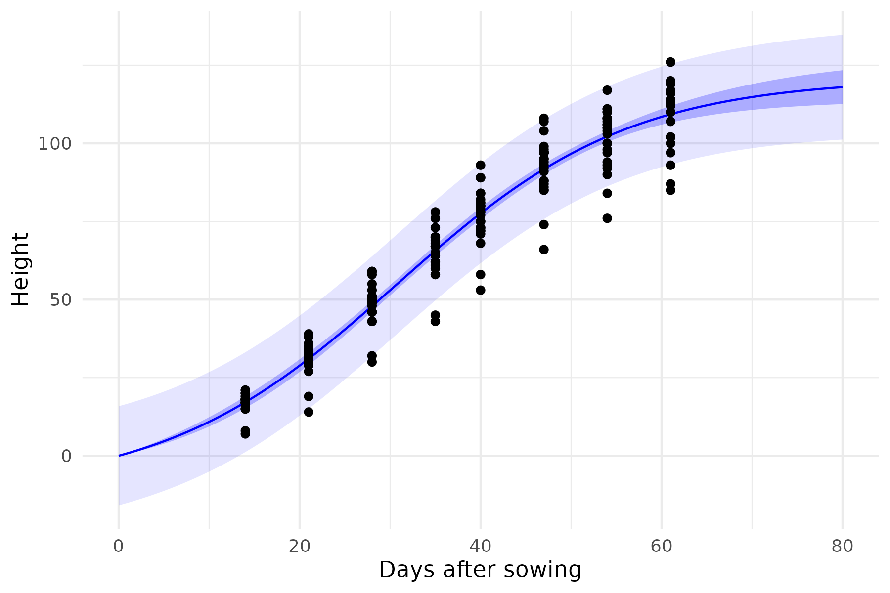
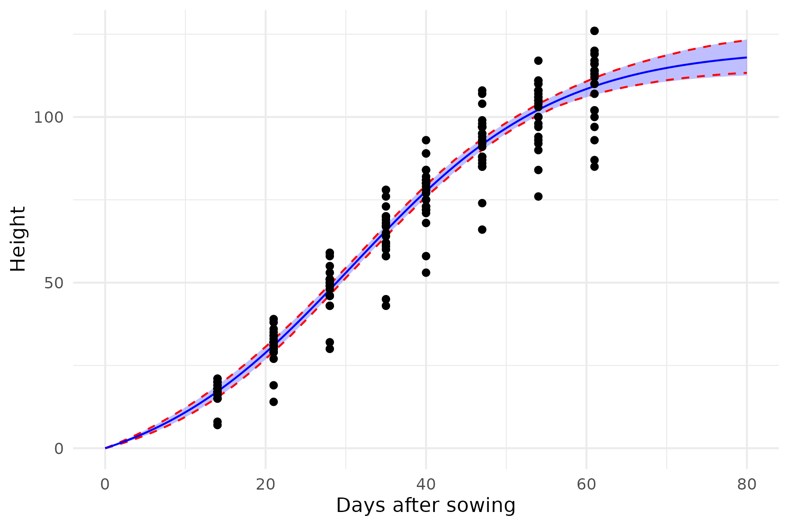
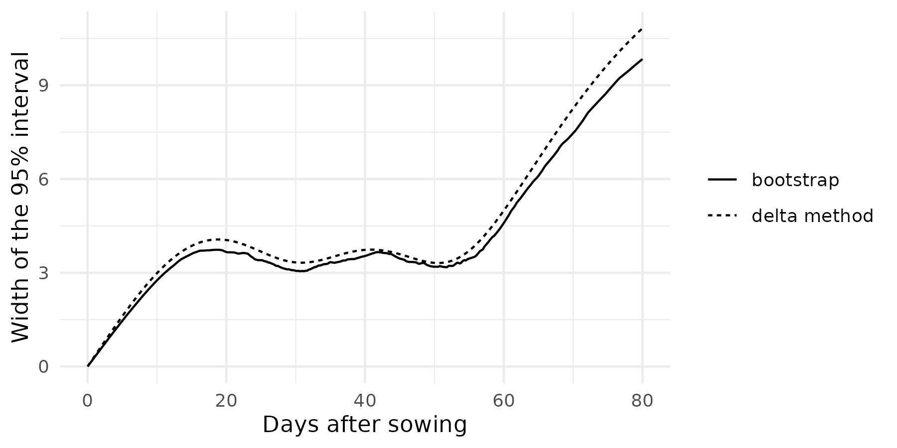
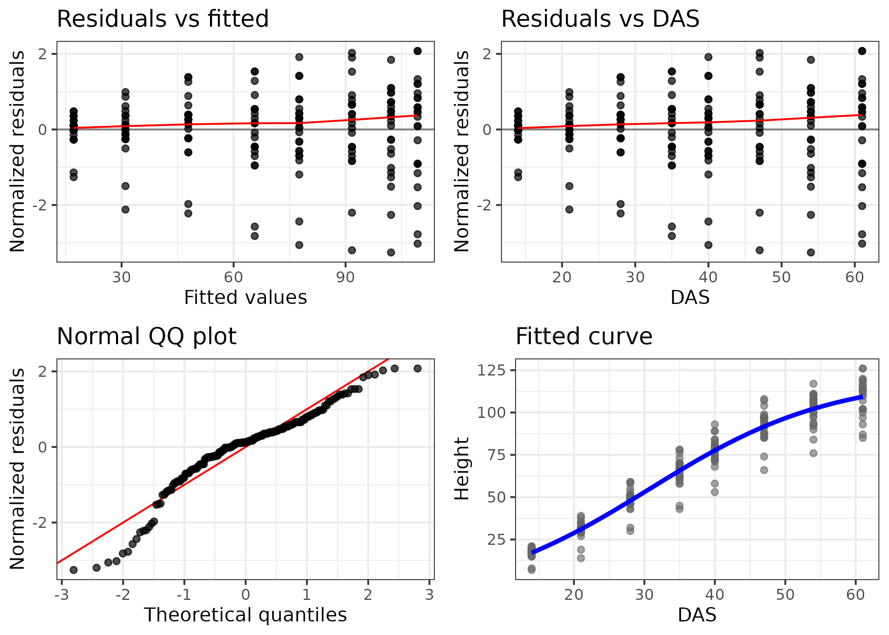
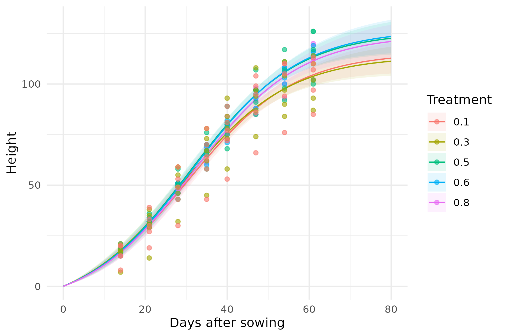

The package gcTMB fits growth curves over time using the Template Model Builder (TMB) framework. The curves can depend on covariates, have random effects (e.g. for repeated measurements of the same individuals), and the response can follow a range of distributions.
This vignette introduces the growth models and the meaning of their
parameters, fits them to the heights of faba bean plants with confidence
intervals, and adds treatment effects. The other vignettes cover fixed
and random effects, the timing and maximum growth rates, correlation
structures, and simulation; the guide vignette("gcTMB")
gives a short overview of all the features.
Growth models
The logistic, Gompertz, Hill, Weibull, beta, normal and gamma curves are sigmoid growth curves, often used in agronomy and ecology, e.g. for the growth of plants and crops over a season. The Chapman-Richards and Korf curves are height-diameter models, common in forestry, and the Preece-Baines curve is a model of human growth in height. All models but the linear one are functions of time, increasing from 0 (or from an intercept) towards the asymptote , e.g. the logistic curve . The variable on the x-axis need not be time: it can be any variable along which the response grows towards an asymptote, e.g. the diameter of trees in a height-diameter model; we write throughout.
- is the asymptote, the response approached at late times,
- is the time of the maximum growth rate, the inflection point of the curve (logistic, Gompertz, Weibull, beta, normal, gamma), the time of half the asymptote (Hill), or the middle of puberty (Preece-Baines),
- is the scale of the curve on the time axis (logistic, Gompertz, normal), its slope on the log time axis (Hill), its shape (Weibull, gamma), the end of growth (beta), or the height in the middle of puberty (Preece-Baines).
The height-diameter models of forestry keep the parameters usual there: the Chapman-Richards curve has the rate and the shape , and the Korf curve a coefficient and a shape (see below).
The parameter is the threshold of truncated curves, the start of growth of the beta curve, the intercept of the Chapman-Richards and Korf curves, or the rate of growth before puberty (Preece-Baines), and the asymmetry of the curve or the rate of growth during puberty (Preece-Baines) (all below).
gompertz
The curve reaches of its asymptote at , and approaches the asymptote more slowly than it leaves zero. The maximum growth rate is .
weibull
For positive times, with the shape ; parameterised so that is the inflection point, the time of the maximum growth rate.
beta
for , and zero otherwise. This is the beta growth function of Yin et al. (2003), in their notation the maximum , the time of the maximum growth rate , the end of growth and the start of growth , with . The curve rises from zero at to its maximum at , where its slope is zero, and falls back to zero at (the dashed line of their Figure 1A), e.g. for biomass that is lost after maturity.
Yin et al. (2003, eqn 8) write the curve for growth that starts at
.
Starting it at
shifts the time axis: the curve above is their eqn 8 with the times
,
and
measured from
,
i.e. replaced by
,
and
.
timeto() and maxrate() use the rising part, up
to
.
beta_capped
The same curve up to the end of growth , and from on: the beta sigmoid growth function of Yin et al. (2003), for determinate growth that stops at its maximum. It is the only curve that reaches its asymptote at a finite time.
normal
with the standard normal distribution function . The curve is symmetric around , where it reaches half of its asymptote and grows fastest; is the standard deviation of the times of growth.
gamma
where is the cumulative distribution function (CDF) of the gamma distribution with shape and scale , here the shape and the scale . For positive times; parameterised so that , the mode of the gamma density, is the inflection point. The curve approaches the asymptote more slowly than it leaves zero, the more so for a small shape , and tends to the normal curve for a large shape.
chapmanrichards
for
,
and
up to
:
the Chapman-Richards curve of Richards (1959), in the form used for
height-diameter models by Kuželka and Marušák (2015). It grows from the
intercept
at
,
by default the breast height of 1.3 m in a height-diameter model of
trees (start = c(b4 = 0) for a curve from zero);
fix = c(b4 = FALSE) estimates it.
is the asymptote above
,
the rate, in units of 1/time (1/cm of diameter), and
the shape. For
the curve has its inflection point at
,
so that a larger rate brings the growth earlier and a larger shape
later; for
it grows fastest at
,
without an inflection point. The curve approaches the asymptote more
slowly than it leaves zero.
It is the Richards curve below (the logistic model with an asymmetry ) with a negative asymmetry and the inflection point : . The Richards curve with approaches zero only as , whereas the Chapman-Richards curve reaches zero at ; between the two, as the shape grows, lies the Gompertz curve.
korf
for , and up to : the Korf curve, as written by Kuželka and Marušák (2015). is the asymptote above the intercept , by default the breast height of 1.3 m, a coefficient that sets how late the curve grows, and the intercept as for the Chapman-Richards curve.
The shape sets the proportion of the asymptote reached at the inflection point, , about 14% for , less for a shape close to 1, and up to for a large one, which makes the Korf curve as flexible as the Chapman-Richards curve. The inflection point is at , for . The curve leaves very flat at small and approaches the asymptote slowly, as a power of .
preecebaines
Model 1 of Preece and Baines (1978) for human growth in height: the
adult height
,
the age
in the middle of puberty, the height
at that age, and the rates
and
of growth before and during puberty,
;
the rates
and
are estimated by default. Unlike the other curves, it does not grow from
zero: its growth rate is highest in early childhood and falls until the
take-off of the pubertal growth spurt, rises to the peak height
velocity, and then falls to zero at the adult height. It is never
truncated. maxrate() gives the peak of the pubertal spurt,
and timeto() the ages at which a percentage of the adult
height
is reached; b1type = "rate" is not available, as the growth
rate is proportional to
rather than to
.
linear
A straight line with slope
and intercept
,
for comparison with the growth curves. It has no asymptote, does not use
to
,
and is not truncated. timeto() gives the times at which it
reaches given responses (type = "absolute"), and
maxrate() its constant growth rate
.
Truncation at a threshold
By default, a curve above is truncated at a threshold time , shifted down to zero at and rescaled to keep the asymptote :
and
up to
,
e.g. before the emergence of the plants or the first pods.
and
keep their meaning for the curve without truncation. By default
is fixed at 0, so that the curve starts at zero at
,
e.g. at sowing; fix = c(b4 = FALSE) estimates it, and
truncated = FALSE gives the curves without truncation. The
Hill and Weibull curves are zero up to
anyway, so a threshold at or below 0 does not change them. The
Chapman-Richards, beta and Korf curves are never truncated: the beta
curve is zero up to its start
anyway, and
is the intercept of the other two. For the Chapman-Richards and Korf
curves,
is the growth above the intercept
,
so that the levels of timeto() in percent and the results
of maxrate() do not depend on it, while the responses of
timeto(type = "absolute") include it.
Maximum growth rate and inflection point
For the curves without truncation and without asymmetry (), the inflection point , the proportion of total growth at inflection , and the maximum growth rate , the slope of the curve at , are:
| Model | Inflection point | Proportion of total growth at inflection | Maximum growth rate |
|---|---|---|---|
| logistic | |||
| gompertz | |||
| hill | |||
| weibull | |||
| beta, beta_capped | |||
| normal | |||
| gamma | |||
| chapmanrichards | |||
| korf | , for | , for | |
| preecebaines | , the pubertal peak | ||
| linear | none | none | at all times |
with for beta, and the larger root of for Preece-Baines.
The maximum growth rate as a parameter
With b1type = "rate",
is the maximum growth rate
of the curve instead of its asymptote, and the asymptote is
,
where
is the maximum growth rate of the curve with asymptote 1, from the table
above; for a truncated curve,
is that of the truncated curve. The curves and the likelihood are the
same as with the asymptote, but covariates and random effects on
are now effects on the maximum growth rate, so that anova()
tests whether the treatments have the same maximum growth rate, and
partest() compares it between pairs of treatments. The
maximum growth rate has a closed form for all curves with
,
and for the logistic (Richards) and Hill curves also with an estimated
asymmetry; the Gompertz, Weibull, normal and gamma curves need
fixed at 1 with b1type = "rate".
Asymmetry
Each model but the beta, beta_capped, Chapman-Richards, Korf,
Preece-Baines and linear ones has an asymmetry parameter
,
with
the curves above. By default
is fixed at 1; fix = c(b5 = FALSE) estimates it, and the
log link, link = c(b5 = "log"), keeps it positive. The
truncation applies to the asymmetric curves in the same way.
- logistic, the Richards curve: which tends to the Gompertz curve as ;
- gompertz, a power of the survival function : as a power of the Gompertz itself would only shift the curve in time;
- hill, the five-parameter log-logistic curve:
- weibull, the exponentiated Weibull curve:
- normal and gamma, a power of the curve relative to its asymptote:
For the Richards curve, remains the inflection point for all : , where the proportion of total growth at inflection is , with the maximum growth rate . goes from (Gompertz, ) through (logistic, ) towards 1 as grows. For the other models with , is the location of the curve rather than its inflection point or the time of half the asymptote.
The faba bean data
The heights of the faba bean plants of FabaHeights25
(see ?FabaHeights25):
library(gcTMB)
library(ggplot2)
head(FabaHeights25)
#> Tube_ID Treatment Date DAS Height DASfact Plant_ID
#> 1 6 0.8 2025-09-24 14 19 14 6
#> 2 7 0.8 2025-09-24 14 18 14 7
#> 3 8 0.8 2025-09-24 14 18 14 8
#> 4 9 0.8 2025-09-24 14 16 14 9
#> 5 10 0.8 2025-09-24 14 17 14 10
#> 6 11 0.6 2025-09-24 14 17 14 11
ggplot(FabaHeights25, aes(x = DAS, y = Height, group = Plant_ID, colour = factor(Treatment))) +
geom_line() +
geom_point() +
labs(x = "Days after sowing", y = "Height", colour = "Treatment") +
theme_minimal()
Fitting a growth curve
The main function is gcTMB(), with the response and the
time in the formula, and the growth model in model.
fit <- gcTMB(Height ~ DAS, data = FabaHeights25, model = "logistic")
summary(fit)
#> Call:
#> gcTMB(form = Height ~ DAS, data = FabaHeights25, model = "logistic")
#>
#> Model: logistic, truncated at b4 = 0
#> Family: gaussian, identity link for all parameters
#>
#> Number of observations: 200
#> Log-likelihood: -699.2 (df = 4), AIC: 1406, BIC: 1420
#>
#> Coefficients:
#> Estimate Std. Error t value Pr(>|t|)
#> b1:(Intercept) 120.7851 3.6524 33.07 <2e-16 ***
#> b2:(Intercept) 30.7300 0.6822 45.05 <2e-16 ***
#> b3:(Intercept) 12.8808 0.9769 13.19 <2e-16 ***
#> ---
#> Signif. codes: 0 '***' 0.001 '**' 0.01 '*' 0.05 '.' 0.1 ' ' 1
#>
#> Residual standard deviation: 8.043 on 197 degrees of freedom
#>
#> Optimiser: relative convergence (4), maximum absolute gradient 3.4e-08Starting values are found from the data by a linearisation of the
curve: for a given asymptote
,
the logistic curve gives
,
a straight line in time, so a linear regression of the transformed mean
responses on time gives
and
,
and similarly for the other sigmoid curves. The asymptote is profiled,
as the observations often do not reach it yet. gcTMBstart()
shows the starting values; the start argument provides
starting values for some or all of the parameters, and the
fix argument fixes parameters at these values.
gcTMBstart(Height ~ DAS, data = FabaHeights25, model = "logistic")
#> b1:(Intercept) b2:(Intercept) b3:(Intercept) b4:(Intercept) b5:(Intercept)
#> 118.82055 33.02562 11.24957 0.00000 1.00000The model is fitted by maximum likelihood. For gaussian (and
lognormal) models without random effects, the inference follows
nls() by default: the residual standard deviation is the
square root of the unbiased residual variance with n - p residual
degrees of freedom, and confidence and prediction intervals use t
quantiles.
Model comparison
All the growth models are fitted to the height data with four sets of estimated parameters:
- , and , the default: and are fixed;
-
to
,
with an estimated threshold,
fix = c(b4 = FALSE); -
,
,
and
,
with an estimated asymmetry,
fix = c(b5 = FALSE), on the log scale; - all five parameters,
fix = c(b4 = FALSE, b5 = FALSE).
The beta, beta_capped, Chapman-Richards and Korf curves have no asymmetry, so their fits with are those without it; their is the start of growth (beta, beta_capped) or the intercept (Chapman-Richards, Korf). The Chapman-Richards and Korf curves start from zero, instead of their default breast height of 1.3, as the other curves. The heights of the faba beans do not decline within the observed days, so the beta curve puts its end of growth beyond them. The Preece-Baines curve, a model of human growth over two decades rather than of the growth of a plant over a season, estimates all five parameters in every set. The straight line, which has only the slope and the intercept , is shown with the first set. The coefficients are printed for the logistic model only.
growth <- c(logistic = "logistic", gompertz = "gompertz", hill = "hill", weibull = "weibull", beta = "beta",
beta_capped = "beta_capped", normal = "normal", gamma = "gamma", chapmanrichards = "chapmanrichards", korf = "korf",
preecebaines = "preecebaines")
sets <- list("b1, b2, b3" = list(),
"b1, b2, b3, b4" = list(fix = c(b4 = FALSE)),
"b1, b2, b3, b5" = list(fix = c(b5 = FALSE), link = c(b5 = "log")),
"b1, b2, b3, b4, b5" = list(fix = c(b4 = FALSE, b5 = FALSE), link = c(b5 = "log")))
# the models of each set; non-converged fits are reported below instead of warning here
allfits <- lapply(sets, function(s) lapply(growth, function(m)
suppressWarnings(do.call(gcTMB, c(list(Height ~ DAS, data = FabaHeights25, model = m,
start = if (m %in% c("chapmanrichards", "korf")) c(b4 = 0)), s)))))
allfits[["b1, b2, b3"]]$linear <- gcTMB(Height ~ DAS, data = FabaHeights25, model = "linear")
lapply(allfits, function(f) coef(f$logistic))
#> $`b1, b2, b3`
#> b1:(Intercept) b2:(Intercept) b3:(Intercept) log_sigma
#> 120.785118 30.729981 12.880774 2.077235
#>
#> $`b1, b2, b3, b4`
#> b1:(Intercept) b2:(Intercept) b3:(Intercept) b4:(Intercept) log_sigma
#> 121.180638 30.548021 13.067656 0.673159 2.077208
#>
#> $`b1, b2, b3, b5`
#> b1:(Intercept) b2:(Intercept) b3:(Intercept) b5:(Intercept) log_sigma
#> 120.95254567 30.66574706 12.98441981 -0.02752325 2.07723410
#>
#> $`b1, b2, b3, b4, b5`
#> b1:(Intercept) b2:(Intercept) b3:(Intercept) b4:(Intercept) b5:(Intercept)
#> 118.4713146 31.4087010 11.0248875 3.1840730 0.7784895
#> log_sigma
#> 2.0770683The models are not nested, but can be compared by their AIC; fits where the optimiser did not converge are marked with an asterisk.
aictab <- sapply(allfits, function(fs) sapply(names(growth), function(m)
paste0(format(round(AIC(fs[[m]]), 1), nsmall = 1), if (fs[[m]]$opt$convergence != 0) "*" else "")))
noquote(aictab)
#> b1, b2, b3 b1, b2, b3, b4 b1, b2, b3, b5 b1, b2, b3, b4, b5
#> logistic 1406.5 1408.5 1408.5 1410.4
#> gompertz 1407.7 1409.3 1408.4 1410.4
#> hill 1409.9 1411.9 1408.4 1410.4*
#> weibull 1407.8 1409.8* 1408.4 1410.4*
#> beta 1406.8 1408.7 1406.8 1408.7
#> beta_capped 1406.8 1408.7 1406.8 1408.7
#> normal 1406.4 1408.4 1408.4 1410.4
#> gamma 1409.7 1411.7 1410.2* 1412.2*
#> chapmanrichards 1410.1 1409.0 1410.1 1409.0
#> korf 1415.3 1410.2 1415.3 1410.2
#> preecebaines 1410.4 1410.4 1410.4 1410.4
AIC(allfits[["b1, b2, b3"]]$linear)
#> [1] 1443.592
ndm <- data.frame(DAS = seq(0, 80, by = 0.1))
curveplot <- function(set){
fs <- allfits[[set]]
curves <- do.call(rbind, lapply(names(fs), function(m)
data.frame(ndm, Height = predict(fs[[m]], newdata = ndm), model = m)))
ggplot(FabaHeights25, aes(x = DAS, y = Height)) +
geom_point(colour = "grey50") +
geom_line(data = curves, aes(colour = model)) +
labs(x = "Days after sowing", y = "Height", colour = "Model", title = paste("Estimated parameters:", set)) +
theme_minimal()
}
for (set in names(sets)) print(curveplot(set))



The curves of the eleven growth models are close to each other within the observed days, and differ mostly in their extrapolation. The estimated threshold is only identified by observations near it, such as zero responses before the growth starts. The heights are positive at all observation times, from day 14, so the threshold of the logistic curve stays near zero, and that of the Gompertz curve moves far below zero, where the curve is no longer truncated. For the Hill, Weibull and gamma curves, which are zero up to anyway, a threshold below zero has no effect at all; the optimiser may then stop with the threshold at zero and report no convergence, with the same curve as without the threshold. The asymmetry of the gamma curve is not identified on these data either: its shape grows without bound, towards the normal curve. An estimated threshold is more useful for counts with zeros before the growth starts, as for the pods in the vignette Fixed and random effects.
Predictions
With interval = "confidence", predict()
adds standard errors and confidence intervals for the mean response by
the delta method; with interval = "prediction", the
intervals are for a new observation (shown in
vignette("gcTMB")).
nd <- data.frame(DAS = seq(0, 80, by = 0.1))
ci <- predict(fit, newdata = nd, interval = "confidence")
ggplot(FabaHeights25, aes(x = DAS, y = Height)) +
geom_ribbon(data = cbind(nd, ci), aes(x = DAS, ymin = lwr, ymax = upr), inherit.aes = FALSE, fill = "blue", alpha = 0.25) +
geom_line(data = cbind(nd, ci), aes(x = DAS, y = fit), colour = "blue") +
geom_point() +
labs(x = "Days after sowing", y = "Height") +
theme_minimal()
Bootstrap confidence intervals
The delta method relies on the curve being close to linear in its
parameters near the estimates. A parametric bootstrap avoids this:
bootstrap() simulates new responses from the fitted model
and fits the model again to each of them. Passed to
predict() by the boot argument, the confidence
intervals are the percentile intervals of the bootstrap curves, and
se.fit is their standard deviation. The same bootstrap
sample can be reused for the confidence intervals of the coefficients
and of timeto(), without fitting the models again.
bt <- bootstrap(fit, nsim = 500, seed = 1, progress = FALSE)
cib <- predict(fit, newdata = nd, interval = "confidence", boot = bt)
# delta method: shaded; bootstrap: dashed limits
ggplot(FabaHeights25, aes(x = DAS, y = Height)) +
geom_ribbon(data = cbind(nd, ci), aes(x = DAS, ymin = lwr, ymax = upr), inherit.aes = FALSE, fill = "blue", alpha = 0.25) +
geom_line(data = cbind(nd, cib), aes(x = DAS, y = lwr), linetype = "dashed", colour = "red") +
geom_line(data = cbind(nd, cib), aes(x = DAS, y = upr), linetype = "dashed", colour = "red") +
geom_line(data = cbind(nd, ci), aes(x = DAS, y = fit), colour = "blue") +
geom_point() +
labs(x = "Days after sowing", y = "Height") +
theme_minimal()
The two intervals nearly coincide here, as the curve is well determined by 200 observations. Their widths show the differences, which are largest beyond the observed days, where the curve depends on the extrapolated asymptote:
widths <- rbind(data.frame(nd, width = ci$upr - ci$lwr, method = "delta method"),
data.frame(nd, width = cib$upr - cib$lwr, method = "bootstrap"))
ggplot(widths, aes(x = DAS, y = width, linetype = method)) +
geom_line() +
labs(x = "Days after sowing", y = "Width of the 95% interval", linetype = NULL) +
theme_minimal()
confint(fit, boot = bt)
#> 2.5 % 97.5 %
#> b1:(Intercept) 114.964247 128.191830
#> b2:(Intercept) 29.439121 32.101261
#> b3:(Intercept) 11.249579 14.907878
#> sigma 7.222271 8.758511Scale or rate
With the inverse link for
,
link = c(b3 = "inverse"), the coefficient of
is the rate
.
Without covariates and random effects on
the fit is the same; with them, covariates and random effects act
additively on the rate instead of the scale.
fitr <- gcTMB(Height ~ DAS, data = FabaHeights25, link = c(b3 = "inverse"))
coef(fitr)
#> b1:(Intercept) b2:(Intercept) b3:(Intercept) log_sigma
#> 120.78511756 30.72998092 0.07763509 2.07723531
coef(fit)[["b3:(Intercept)"]]
#> [1] 12.88077The shapes
of the Weibull, gamma and Korf curves must be larger than 1. Their
default link is
log,
"logm1", so that every value of the coefficients gives a
valid shape, also with covariates and random effects on
,
and the optimiser cannot step to an invalid one; their coefficients of
are on that scale. link = c(b3 = "identity") gives the
shape itself, with the same fit when
has no covariates or random effects.
Diagnostics
plot() draws validation plots: residuals against the
fitted values and against time, and a normal QQ plot of the randomised
quantile residuals (Dunn and Smyth, 1996). The data with the fitted
curve are added as the last graph; type = "curves" draws
the curves alone. The repeated measurements of the same plants are not
independent; the random effects of the plants (vignette Fixed and
random effects) account for that.
plot(fit)
Treatment effects
The parameters can depend on covariates through fform.
Here the treatment acts on the asymptote
and the time of the maximum growth rate
,
with treatment contrasts: the coefficients b1:(Intercept)
and b2:(Intercept) are those of the first treatment level,
and b1:trt0.3 etc. the differences of the other levels from
it. Without random effects, the repeated measurements of the plants are
treated as independent; the next vignette, Fixed and random
effects, accounts for them.
FabaHeights25$trt <- factor(FabaHeights25$Treatment)
trts <- data.frame(trt = levels(FabaHeights25$trt))
fittrt <- gcTMB(Height ~ DAS, fform = b1 + b2 ~ trt, data = FabaHeights25)
coef(fittrt)
#> b1:(Intercept) b1:trt0.3 b1:trt0.5 b1:trt0.6 b1:trt0.8
#> 115.4809437 -1.7965772 10.1843921 11.1921913 8.7152228
#> b2:(Intercept) b2:trt0.3 b2:trt0.5 b2:trt0.6 b2:trt0.8
#> 30.4324020 -1.3524743 0.5712569 1.0744934 1.2993753
#> b3:(Intercept) log_sigma
#> 12.9539667 2.0255569predict() with type = "parameters" gives
the parameters of the curve of each treatment, and newdata
with the treatment and the time the curves with their confidence
intervals:
cbind(trts, predict(fittrt, newdata = trts, type = "parameters"))
#> trt b1 b2 b3
#> 1 0.1 115.4809 30.43240 12.95397
#> 2 0.3 113.6844 29.07993 12.95397
#> 3 0.5 125.6653 31.00366 12.95397
#> 4 0.6 126.6731 31.50690 12.95397
#> 5 0.8 124.1962 31.73178 12.95397
ndt <- merge(trts, data.frame(DAS = seq(0, 80, by = 0.5)))
ndt <- cbind(ndt, predict(fittrt, newdata = ndt, interval = "confidence"))
ggplot(FabaHeights25, aes(x = DAS, y = Height, colour = trt)) +
geom_ribbon(data = ndt, aes(x = DAS, ymin = lwr, ymax = upr, fill = trt), inherit.aes = FALSE, alpha = 0.1) +
geom_line(data = ndt, aes(y = fit)) +
geom_point(alpha = 0.6) +
labs(x = "Days after sowing", y = "Height", colour = "Treatment", fill = "Treatment") +
theme_minimal()
References
Dunn, P.K. and Smyth, G.K. (1996). Randomized quantile residuals. Journal of Computational and Graphical Statistics 5, 236–244. doi:10.1080/10618600.1996.10474708.
Kuželka, K. and Marušák, R. (2015). KORFit: An efficient growth function fitting tool. Computers and Electronics in Agriculture 116, 187–190. doi:10.1016/j.compag.2015.07.001.
Preece, M.A. and Baines, M.J. (1978). A new family of mathematical models describing the human growth curve. Annals of Human Biology 5, 1–24.
Richards, F.J. (1959). A flexible growth function for empirical use. Journal of Experimental Botany 10, 290–300.
Yin, X., Goudriaan, J., Lantinga, E.A., Vos, J. and Spiertz, H.J. (2003). A flexible sigmoid function of determinate growth. Annals of Botany 91, 361–371.